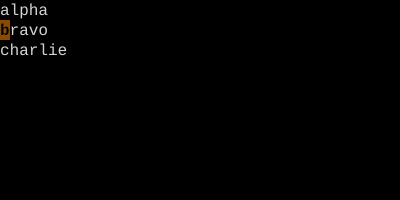
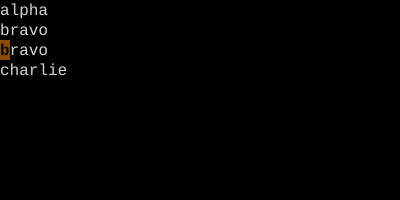
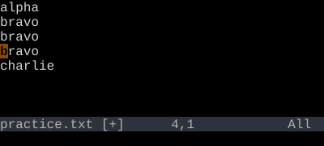

The Unnamed Register
"" — where every yank and delete lands by default.
Every yank and delete writes the unnamed register. p and P read from it. It is the implicit clipboard of every Vim editing session.
When you press y, d, c, or x, the affected text goes into the unnamed register. When you press p or P, the unnamed register comes back. Unless you say otherwise, this is the register your editing uses.
Worked example — yy then p
Copy a line, paste below.

"" (unnamed).


The unnamed register " is the default destination for yanks/deletes and source for p/P.
See also: Registers, Numbered Registers, Named Registers, Delete